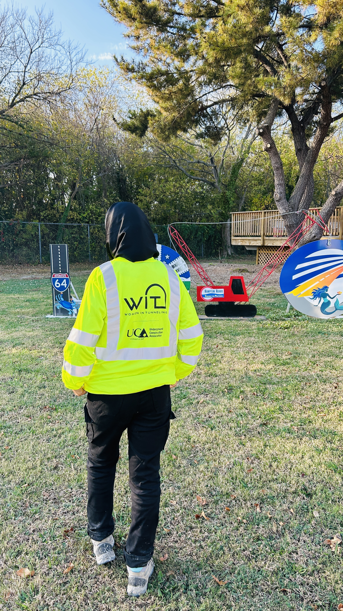

About Me

Me at a Women in Tunneling event.
Hello! I am Midhat Sajad and I'm a PhD student in Underground Construction and Tunnel Engineering at Colorado School of Mines.
Outside of research, I'm the person you'll find planning the next hike or trying a new recipe. I bring the same care for detail from tunnel design to whatever I'm building next.
I've moved around a fair amount chasing this career, from the design office to the tunnel face, across a couple of countries and a few cities. That's the resume version, though; the rest of this page is more about who I am along the way.
I'm the kind of person who enjoys learning just for its own sake, exploring new ideas, and turning a frustrating problem into a chance to figure something out. My journey has taken me through different academic and professional experiences, each adding a new perspective on how I see things. Outside of academics and work, I enjoy discovering new places, spending time with the people I care about, and making room for the interests and little moments that make life more meaningful.
What I'm Curious About
I'm the kind of person who ends up down a rabbit hole reading about something totally unrelated to what I was originally doing. I'm curious about how things work, why people build what they build, and what's changing in the world day to day, not just in engineering. Mostly I just like learning things I didn't know I wanted to know. (If you want the research version of that curiosity, it lives on the My PhD Research Interest page.)